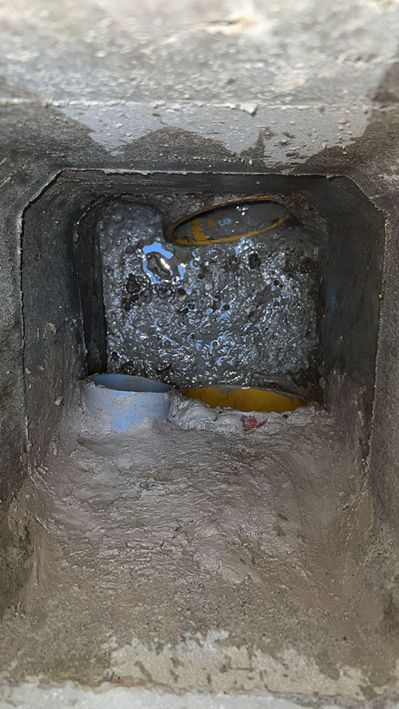

L’eau remonte dans la douche du rez-de-chaussée dès que les étages se servent de l’eau. Les toilettes du premier gargouillent. Quand plusieurs logements sont touchés en même temps, la colonne de l’immeuble est sans doute bouchée en dessous de leurs branchements, ou plus bas encore, dans le collecteur, le tuyau qui reçoit les colonnes en bas de l’immeuble.
En bref
- Si plusieurs logements débordent ou s’écoulent mal en même temps, la colonne ou le collecteur est sans doute bouché : prévenez le gardien ou le syndic, et faites arrêter l’usage de l’eau dans les étages.
- Le débouchage d’une colonne commune est en principe une charge de la copropriété, et des juges ont refusé que des frais de débouchage ou de dégorgement soient refacturés aux locataires.
- Après le débouchage, une inspection à la caméra montre si le tuyau est encrassé, abîmé ou mal posé.
Les signes d’une colonne bouchée dans l’immeuble
- L’eau remonte (on parle de refoulement) dans la douche, l’évier ou les toilettes du logement le plus bas, quand les étages utilisent l’eau.
- Plusieurs logements s’écoulent mal en même temps.
- Des glouglous dans les évacuations, une odeur d’égout dans les logements ou la cage d’escalier.
- De l’eau au pied de la colonne dans la cave, ou un regard qui déborde dans la cour.
Odeur d’égout dans l’immeuble : les causes à vérifier
De l’eau dans la cave : la fuite peut venir d’une canalisation enterrée
Si un seul évier s’écoule mal, le bouchon est sans doute dans l’évacuation de ce logement, avant la colonne.
Ne laissez pas traîner un écoulement lent. L’Agence Qualité Construction décrit un réseau extérieur où des difficultés d’écoulement qui duraient ont fini par tout boucher, avec un débordement dans les pièces habitées.
Les premiers gestes
- Prévenez le gardien ou le syndic.
- Faites passer le mot dans les étages : pas de douche, de machine ni de chasse d’eau tant que la colonne n’est pas débouchée. L’eau envoyée d’en haut ressort par l’appareil le plus bas.
- Protégez le logement touché, et coupez l’électricité si l’eau approche des prises.
- Prenez des photos des appareils qui débordent, du sol et du plafond du dessous.
Si l’eau a abîmé des logements, c’est un dégât des eaux. Quand il prend naissance dans les parties communes, c’est le syndic qui le déclare à l’assureur de l’immeuble. Chaque occupant touché prévient aussi son propre assureur.
Pour faire déboucher, le syndic n’a pas à attendre l’assemblée générale quand il y a urgence : la loi le charge de faire procéder de sa propre initiative aux travaux nécessaires à la sauvegarde de l’immeuble. L’ANIL rappelle qu’il peut aussi engager seul les travaux de menu entretien.
Travaux urgents en copropriété : ce que le syndic peut faire sans attendre l’assemblée
Déboucher, puis regarder l’intérieur du tuyau
Le bouchon se retire par un accès au réseau : un tampon de visite, un regard, ou un appareil démonté. A.T.C. BAT assure le débouchage et le dégorgement des canalisations, y compris des colonnes d’immeuble.
Selon la situation et le besoin, le débouchage se fait par hydrocurage : un jet d’eau à haute pression nettoie l’intérieur du tuyau. Une fois l’eau repartie, nous passons la caméra d’inspection dans la canalisation. L’image s’affiche en direct à l’écran : dépôts, rouille, joint déboîté, tuyau fissuré ou déformé. Ce constat dit si le bouchon était un accident ou le signe d’un tuyau à reprendre.
Ce constat dit aussi où était le bouchon, ce qui compte pour savoir qui paie. Un exemple tiré d’un de nos rapports de janvier 2026, sans nom ni adresse. Dans un logement, les évacuations se bouchent à répétition. La caméra descend dans la colonne, du deuxième étage jusqu’à son pied : ni bouchon, ni fissure. Le bouchon est dans la canalisation du logement, avant la colonne. Il vient de dépôts et d’un défaut de pente. Le rapport conclut que la colonne n’est pas en cause et conseille de reprendre la pente.
Quand la colonne en fonte fuit : la réparer ou la changer
Réparation et remplacement de colonne d’immeuble
Qui paie le débouchage
En principe, la copropriété paie le débouchage d’une colonne commune. Celui de l’évacuation privative d’un seul logement revient au copropriétaire, ou au locataire si le logement est loué. Tout dépend donc de l’endroit du bouchon, et du règlement de copropriété.
Si le bouchon est dans la colonne : quand le règlement ne dit rien ou se contredit, la loi du 10 juillet 1965 répute communs les éléments d’équipement commun, y compris les parties de canalisations qui traversent les logements. Les copropriétaires participent aux charges d’entretien des parties communes et des équipements communs, selon la répartition fixée par le règlement. À Paris, le règlement d’assainissement met aussi l’entretien et les réparations des installations intérieures à la charge du propriétaire de l’immeuble. Le débouchage d’une colonne commune est donc en principe payé par la copropriété.
Si le bouchon est dans l’évacuation d’un seul logement, avant la colonne, c’est le règlement qui dit si cette évacuation est privative. Si elle l’est, le copropriétaire paie. Si le logement est loué, le locataire doit dégorger les canalisations d’eau du logement : c’est une réparation locative, selon service-public.gouv.fr et le décret n° 87-712 du 26 août 1987.
Canalisation commune ou privative : où passe la limite
Et le bailleur, peut-il refacturer le débouchage de la colonne à son locataire ? Les charges récupérables sont fixées par une liste limitative, celle du décret n° 87-713 du 26 août 1987, qui ne cite pas le dégorgement des colonnes. L’ANIL résume un arrêt de la Cour de cassation de 2007 : des frais de débouchage des égouts, non visés par le décret, ne peuvent pas être récupérés sur les locataires. En 2012, dans un arrêt non publié, la Cour a approuvé un tribunal qui avait fait rembourser aux locataires des frais de dégorgement d’une colonne d’eaux usées et de colonnes d’eaux vannes.
Pour un cas précis, relisez le bail et interrogez l’ADIL de votre département : ses conseils sont gratuits.
Éviter que ça recommence
- Affichez un rappel dans le hall : ni lingettes, ni graisses, ni restes de repas dans les toilettes et les éviers. À Paris, le règlement d’assainissement interdit de rejeter à l’égout, y compris par les canalisations de l’immeuble, les graisses, l’huile de cuisine et les déchets solides, même broyés.
- Gardez des accès. L’AQC note que sans plan du réseau ni regards de visite, on ne peut ni l’entretenir correctement, ni y mener une investigation efficace.
- Si le bouchon revient, faites inspecter le réseau à la caméra. Pour les réseaux enterrés, l’AQC cite d’abord les défauts de pente et les tuyaux ovalisés. Une colonne en fonte rongée se répare ou se remplace.
- Si l’égout public risque de refouler dans l’immeuble, l’AQC juge indispensable un clapet anti-retour, à entretenir régulièrement. À Paris, par temps de pluie, l’eau de l’égout peut monter jusqu’au niveau de la rue : le règlement d’assainissement impose un dispositif anti-refoulement à tout appareil d’évacuation situé plus bas que la chaussée où passe l’égout, aux frais du propriétaire.


Créer ou changer un regard : nos travaux d’assainissement
Remplacer les colonnes d’eaux usées d’un immeuble : de la décision au chantier
Sources
- Légifrance, loi n° 65-557 du 10 juillet 1965 fixant le statut de la copropriété des immeubles bâtis, articles 3 (version en vigueur depuis le 25 novembre 2018), 10 (depuis le 1er janvier 2023) et 18 (depuis le 11 avril 2024)
- Légifrance, décret n° 87-713 du 26 août 1987 fixant la liste des charges récupérables, annexe
- Légifrance, décret n° 87-712 du 26 août 1987 relatif aux réparations locatives, article 1er et annexe (IV, installations de plomberie)
- Service Public (DILA), « Entretien courant et réparations locatives à la charge du locataire », fiche F31697, vérifiée le 21 mai 2025
- ANIL, « Charges récupérables / Frais de débouchage des égouts », jurisprudence (Cass. civ. III, 3 avril 2007)
- Cour de cassation, troisième chambre civile, 13 juin 2012, pourvoi n° 11-18.740, arrêt non publié
- ANIL, « Travaux et majorités »
- Service Public (DILA), « Copropriété : quelle assurance pour les parties communes ou privatives ? », fiche F2027, vérifiée le 22 juillet 2025
- Service Public (DILA), « Assurance dégâts des eaux », fiche F1352, vérifiée le 25 juillet 2025
- Ville de Paris, « Règlement d’assainissement de Paris », édition 2025, approuvé par le Conseil de Paris en octobre 2025, en vigueur depuis le 1er janvier 2026, articles 3.2 « Déversements interdits », 29 « Installations situées à un niveau inférieur à celui du réseau » et 31 « Entretien et renouvellement des installations intérieures et extérieures » (articles 29 et 31 consultés le 16 octobre 2026)
- Agence Qualité Construction, « Pathologie des canalisations eaux vannes-eaux usées et interfaces avec le VRD », fiche pathologie A.09, mise à jour en septembre 2026
Sources consultées le 15 octobre 2026. Cet article donne des repères généraux. Le règlement de copropriété et le bail font foi.